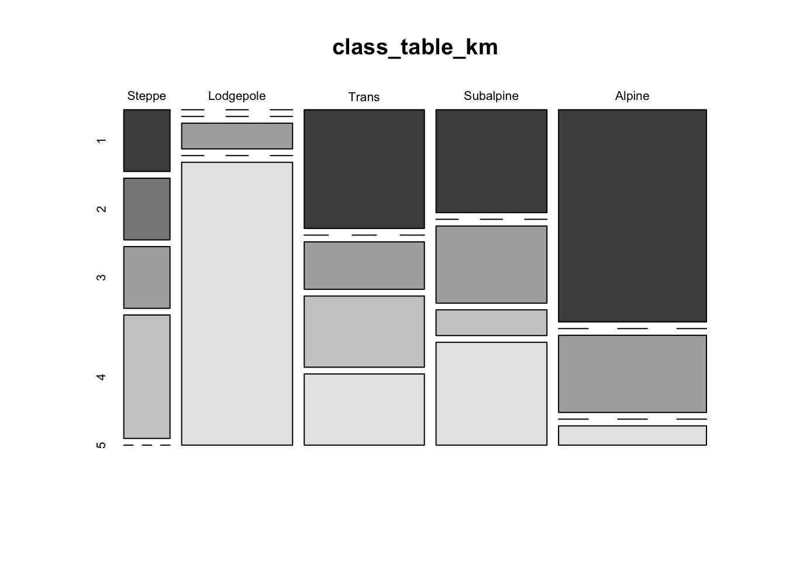

Multivariate distances and cluster analysis
NOTE: This page has been revised for Winter 2021, but may undergo further edits.
1 Introduction
There is a broad group of multivariate analyses that have as their objective the organization of individual observations (objects, sites, individuals), and these analyses are built upon the concept of multivariate distances (expressed either as similarities or dissimilarities) among the objects.
The organization generally takes two forms:
- the arrangement of the objects in a lower-dimensional space than the data were originally observed on;
- the development of “natural” clusters or the classifications of the objects.
These analyses share many concepts and techniques (both numerical and practical) with other procedures such as principal components analysis, numerical taxonomy, discriminant analysis and so on.
The analyses generally begin with the construction of an n x n matrix D of the distances between objects. For example, in a two dimensional space, the elements dij of D could be the Euclidean distances between points,
dij = [(xi1- xj1)2 + (xi1- xj1)2]½
The Euclidean distance, and related measures are easily generalized to more than two dimensions.
2 Basic distances
As an example of the calculation of multivariate distances, the following script will calculate the Euclidean distances, in terms of pollen abundance, among a set of (modern) pollen surface-samples in the Midwest that were used for fitting regression equations for reconstructing past climates from fossil-pollen data. (Note: because the pollen data were transformed by taking the square roots of pollen abundance data, what is actually being calculated here is the so-called “squared chord-distance” or SCD.)
The distance matrix, each element of which displays the distance between two points in “pollen space” (as opposed to geographical space) can be displayed using the image() function. The looping in the code below is inefficient, but illustrates what is going on.
Load some libraries:
library(sf)## Linking to GEOS 3.8.1, GDAL 3.1.4, PROJ 6.3.1library(lattice)
library(RColorBrewer)# calculate a Squared Chord-Distance dissimilarity matrix for
# Midwestern pollen data
X <- as.matrix(midwtf2[,7:21])
nvars <- 14
nobs <- 124
SCDist <- array(0.0, c(nobs^2,3))
dimnames(SCDist) <- list(NULL,c("i","j","SCD"))
SCDist_matrix <- array(0.0, c(nobs,nobs))
for (i in 1:nobs) {
for (j in 1:nobs) {
distance <- 0.0
for (k in 1:nvars) {
distance <- distance + ((sqrt(X[i,k])-sqrt(X[j,k]))^2)
}
m <-((i-1)*nobs)+j
SCDist[m,3] <- sqrt(distance)
SCDist_matrix[i,j] <- sqrt(distance)
SCDist[m,1] <- i
SCDist[m,2] <- j
}
}
# display the distance matrix
grid <- expand.grid(obs1 = seq(1:nobs), obs2 = seq(1:nobs))
levelplot(SCDist_matrix ~ obs1*obs2, data=grid, col.regions = gray(seq(0,1,by=0.0625)),
xlab="observation", ylab="observation")
2.1 Mahalanobis distances
The basic Euclidean distance treats each variable as equally important in calculating the distance. An alternative approach is to scale the contribution of individual variables to the distance value according to the variability of each variable. This approach is illustrated by the Mahalanobis distance, which is a measure of the distance between each observation in a multidimensional cloud of points and the centroid of the cloud. The Mahalnobis distance D2 is given by
D2 = (x - m)V -1(x - m)
where x is a vector of values for a particular observation, m is the vector of means of each variable, and V is the variance-covariance matriX_
The following code illustrates the calculation of Mahalanobis distances in a “climate space” described by two climate variables from the Midwest pollen-climate data set. The graduated circle around each point is proportional to the Mahalanobis distance between that point and the centroid of scatter of points. The blue ellipses (drawn using the ellipse() function from the car package) graphically illustrate isolines of Mahalanobis distance from the centroid. The red circles are of radii 1 and 2, and illustrate isolines of Euclidean distance from the centroid.
# Mahalonobis distances
# July and annual temperature
X <- as.matrix(midwtf2[,4:5])
X_cov <- var(scale(X)) # standardize first
X_cov <- var(X)
X_mean <- apply(X,2,mean)
X_mah <- mahalanobis(X, X_mean, X_cov)
# plot the variables, conf. ellipses and M.D.
library(car)## Loading required package: carDatalibrary(plotrix)
# plot points, Mahalanobis distances and Euclidean distances
plot(midwtf2$tmeanjul, midwtf2$tmeanyr, asp=1, pch=16, col="gray50")
ellipse(X_mean, X_cov, radius=1, add=TRUE)
ellipse(X_mean, X_cov, radius=2, add=TRUE)
points(midwtf2$tmeanjul, midwtf2$tmeanyr, cex=10*(X_mah-min(X_mah))/(max(X_mah)-
min(X_mah)))
draw.circle(X_mean[1], X_mean[2], radius=1, lwd=2, bor="red")
draw.circle(X_mean[1], X_mean[2], radius=2, lwd=2, bor="red")
The following code finds the Mahalanobis distances between each pollen site, where distances are now in “pollen space.”.
# Mahalonobis distances for individual spectra, Midwestern pollen data
X <- as.matrix(midwtf2[,7:21])
X_cov <- var(X)
X_mean <- apply(X,2,mean)
X_mah <- mahalanobis(X, X_mean, X_cov, tol.inv=1e-16)These distances-in-pollen-space can be mapped as graduated circles, where the size of the circle is proporational to the ditance between the pollen data at each point, and the centroid or mean pollen spectrum over all of the data.
# Map the Midwestern study area
# plot shape file
plot(st_geometry(midwotl_sf), axes=TRUE)
points(midwtf2$longitud, midwtf2$latitude, cex=10*(X_mah-min(X_mah))/(max(X_mah)-min(X_mah)))
3 Multidimensional scaling (MDS)
The objective of MDS is to portray the relationship between objects in a multidimensional space in a lower-dimensional space (usually 2-D) in such a way that the relative distances among objects in the multidimensional space are preserved in the lower-dimensional space. The classic illustrative example is the analysis of geographically arrayed data, which can be done with the Oregon climate-station data:
## Multi-dimensional scaling (MDS)
# plot Oregon climate stations
# plot station names as a conventional map
plot(st_geometry(orotl_sf))
#points(lon, lat, pch=3)
text(orstationc$lon, orstationc$lat, labels=as.character(orstationc$station), cex=.6)
The plot generated above is a conventional map, where the points (stations) are located by their absolute coordinates. The next display uses only the distances among points to determine the positions of the points relative to one another.
# MDS "map" based only on distances between stations, not their absolute coordinates
X <- as.matrix(orstationc[,2:3]) # longitude and latitude only
X_scal <- cmdscale(dist(X), k=2, eig=T)
X_scal$points[,1] <- -X_scal$points[,1] # may need to reverse axes
# X_scal$points[,2] <- -X_scal$points[,2]
plot(X_scal$points, type="n")
text(X_scal$points, labels = orstationc$station, cex=.6)
It’s possible to see the rough outline of the state in the locations of the stations, which is not surprising. In the following display, the climate data alone are used in the analysis, and again the rough outline of the state and geographical arrangement of stations is evident on inspection. Note that only the locations of the stations in “climate space” (as opposed to geographical space) is used to organize the observations in a low-dimensional space.
# multidimensional scaling of Oregon climate station data
# now with climate variables not locations
X <- as.matrix(orstationc[,5:10])
X_scal <- cmdscale(dist(X), k=2, eig=T)
X_scal$points[,1] <- -X_scal$points[,1]
X_scal$points[,2] <- -X_scal$points[,2]
plot(X_scal$points, type="n")
text(X_scal$points, labels = orstationc$station, cex=.6)
The final example, shows an MDS of the Midwestern pollen data. The two scatter plots show the distributions of latitude and longitude in a low-dimensional pollen space. Points that are close to one another (on either of the plots) have similar pollen spectra, while points farther away from one another are less similar in terms of pollen.
# multidimensional scaling of Midwestern pollen data
X <- as.matrix(midwtf2[,7:21])
X_scal <- cmdscale(dist(X), k=2, eig=T)
X_scal$points[,2] <- -X_scal$points[,2]
plot(X_scal$points, type="n", main="latitude")
text(X_scal$points, labels = (format(signif(midwtf2$latitude,digits=3))),
cex=.6)
plot(X_scal$points, type="n", main="longitude")
text(X_scal$points, labels = (format(signif(midwtf2$longitud,digits=3))),
cex=.6)
4 Cluster analysis
In a cluster analysis, the objective is to use similarities or dissimilarities among objects (expressed as multivariate distances), to assign the individual observations to “natural” groups. Cathy Whitlock’s surface sample data from Yellowstone National Park describes the spatial variations in pollen data for that region, and each site was subjectively assigned to one of five vegetation zones.
There is a very large number of clustering procedures, and quite a few have been implemented in R and S-Plus. Here are some examples:
4.1 Hierarchical clustering
# hierarchical clustering, Ward's method, Yellowstone pollen data
attach(ypolsqrt)
X <- as.matrix(ypolsqrt[,4:35]) # just the pollen data
X_dist <- dist(scale(X))
# image(seq(1:58),seq(1:58),as.matrix(X_dist))
hier_cls <- hclust(X_dist, method = "ward.D2")
plot(hier_cls, labels=ypolsqrt$Veg, cex=.7)
Ward’s method is one of the more “traditional” cluster analysis methods and typically is displayed using a “dendrogram” that can be intuitively interpreted. Note that there is no prior assumption of the number of clusters that is made. The success of the clustering can be judged by a mosaic plot, which compares the objectively determined clusters of samples, with a previous subjective assignement of each sample to a vegetation zone.
# list subjective vegetation zones
levels(ypolsqrt$Veg)## [1] "Steppe" "Lodgepole" "Trans" "Subalpine" "Alpine"# cut dendrogram to give 5 clusters
nclust <- 5
clusternum <- cutree(hier_cls, k=nclust)
class_table_hier <- table(ypolsqrt$Veg, clusternum)
mosaicplot(class_table_hier, color=T)
With the exception of the “Subalpine” vegetation zone, the objective clusters usually contain samples that fall into one or two of the subjective zones.
4.2 k-means clustering
In “k-means” clustering, a specific number of clusters, k, is set before the analysis, and the analysis moves individual observations into or out of the clusters until the samples are distributed optimally (i.e. low within-cluster variability, high among-cluster variability).
# k-means clustering of Yellowstone pollen data
library(cluster)
X <- as.matrix(ypolsqrt[,4:35])
kmean_cls <- kmeans(X, centers=5)
class_table_km <- table(ypolsqrt$Veg, kmean_cls$cluster)
mosaicplot(class_table_km, color=T)
Another approach for viewing the within vs. among cluster variability for k-means clustering is via a “stripes plot” from the flexclust package. The stripes plot contains k large rectangular areas, one for each cluster, within which are shown the distances from the centroid of the cluster of the points that wound up in each cluster, highlighted by a smaller rectangle. Additional points that had a particular cluster as the second closest are shown by other horizontal lines. In an ideal case, there would be little or no overlap between the additional points, and the smaller shaded rectangles.
# flexclust library version of k-means, with stripes plot
library(flexclust)
X <- as.matrix(ypolsqrt[,4:35])
flexclust_cls <- cclust(X, dist="euclidean", method="kmeans", k=5)
class_table_flexclust <- table(ypolsqrt$Veg, flexclust_cls@cluster)
stripes(flexclust_cls, type="second", col = 1)
mosaicplot(class_table_flexclust, color=T)
4.3 PAM (“partioning among mediods” clustering)
Here’s another example of a more exotic clustering algorithm
# "pam" clustering of Yellowstone pollen data
library(cluster)
X <- as.matrix(ypolsqrt[,4:35])
pam_cls <- pam(X, k=5)
plot(pam_cls)
class_table_pam <- table(ypolsqrt$Veg, pam_cls$cluster)
mosaicplot(class_table_pam, color=T)5 Readings
- Chapter 25, Multivariate Statistics, in Crawley, M.J. (2013) The R Book, Wiley. To get to the book, visit http://library.uoregon.edu, login if necessary, and search for the 2013 edition of the book. Here’s a direct link, once you’re logged on: [Link]
- Everitt and Hothorn (2011) An Introduction to Applied Multivariate Analysis with R, ch. 4 and 6. To get to the book, visit http://library.uoregon.edu, search for the book, and login if necessary. Here’s a direct link, once you’re logged on: [Link]
- Peng (2016) Exploratory Data Analysis with R, ch. 11 and 12. See readings tab for a link to the e-book.
- Ch. 14 in Zuur et al. (2007) Analysing Ecological Data, Springer. (Search the UO Library catalog for the Bivand et al. book (as in lecture 7), then search for “Analysing Ecological Data” in the Springer Link search field.)